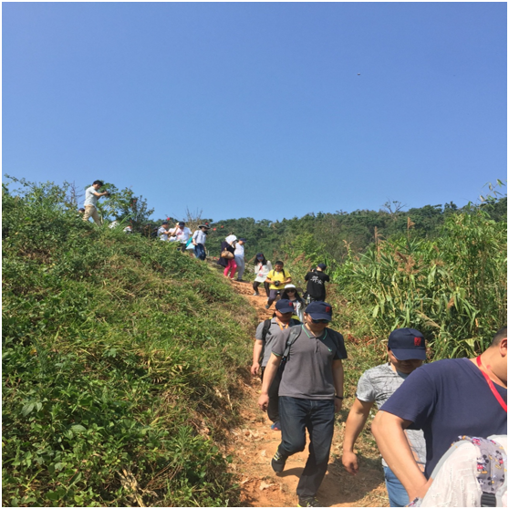
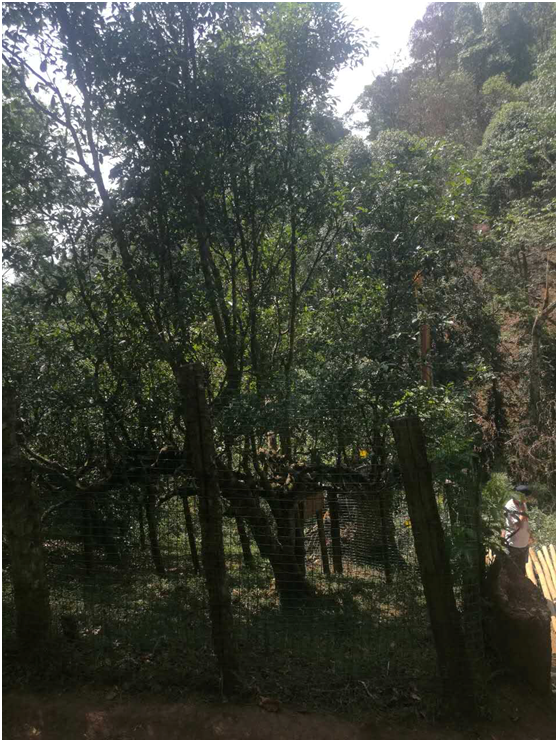
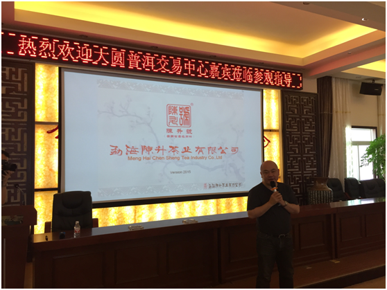
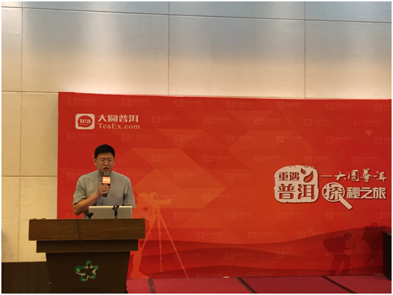

交易中心
交易中心
 交易指南
交易指南
 普洱档案
普洱档案
 普洱资讯
普洱资讯
 下载中心
下载中心
 活动频道
活动频道

蒙顶山普洱，用信念追溯本源
2016-05-10 09:45 来源：蒙顶山普洱
产有地 自安心
位于云南西双版纳勐海的南糯山有着“世界古茶第一村”的美誉，这也是蒙顶山普洱上线产品原料的一个示范产地。作为南糯山重要一个寨子，半坡老寨以拥有11000余棵直径达到或超过18厘米的古树闻名于世。半坡老寨是哈尼族人住地，一共有几十户人家，随着普洱热在国内的兴起，这里也逐渐摆脱了贫困，吸引了来自海内外不少的爱茶人慕名前来。于是…清晨，我们踩着蜿蜿蜒蜒的山路来到南糯山，放眼望去一片茶园尽收眼底，扑面而来的清新使人沉醉~新绿的茶叶仿佛是有灵性的，一片片地舒展着筋骨，释放着这片山水的独有气息~

近三个小时的山路，我们看到了期许已久“茶王”、“茶后”~老茶树树干盘曲，树枝婀娜，满树的绿叶随风摇摆，似是欢迎，似是舞蹈，一扫我们全身的疲倦。这里山水绿意，百鸟云集，茶王茶后默默地在这生长了几百年~同行的各位媒体朋友和投资人无不感叹：“蒙顶山平台上线的藏品出在这样的环境，对于藏品的品质，还有什么可担心的呢”！

（南糯山普洱“茶王”）
严苛的工艺成就蒙顶山普洱的藏品质量
作为首批在蒙顶山普洱平台上线的普洱品牌，陈升号一直在众多茶人、和投资人心中占据着非常高的地位，而陈升号班章2015、陈升号班章2016、陈升号布朗3款藏品已先后在蒙顶山普洱平台上线，一经挂牌更成为了投资人追捧的“明星产品”！于是…
“探秘之旅”一行下午便拜访了茶企陈升号。陈升号在易武、班章、南糯山等很多云南著名普洱茶产地都拥有自己的基地。值得一提的是，陈升号在鲜叶采集等很多茶生产方面都使用非常严格的标准，比如鲜叶采集，陈升号的一级鲜叶标准是每公斤鲜叶中一芽两叶，占85%以上，这比国家标准高了5个百分点。此外陈升号在茶农对于茶树的鲜叶采集到生产出能喝的普洱都有着非常严格的标准。蒙顶山普洱牵手陈升号正式出于这样的原因。
随后，陈升号总经理陈柳滨和大家分享了“蒙顶山普洱平台的出现，对于整个普洱茶产业而言是好事，更让普洱茶产业的未来更加精彩！”的观点，并安排“探秘之旅”一行亲自到制茶车间亲身体验了制作普洱茶的过程。
在有着数十年制茶手艺的老茶人的帮助下，与会一行切实感受到了“好产品出自严工艺”的理念。更由衷的觉得“蒙顶山普洱之所以在如此短的时间便取得了这样的成绩，是有原因的”——严苛的制茶工艺成就了蒙顶山普洱的藏品质量！

探秘探来了“重要人物”
在体验了普洱茶严苛的制作工艺之后，“探秘之旅”一行回到酒店，正当大家准备开饭时，云南省勐海县县长张世影一行突然“空降”宴会厅，瞬间便吸引了众多媒体的关注。
张世影县长对于蒙顶山普洱举行的此次探秘之旅活动表示欢迎。张世影县长表示：十三五期间勐海县将继续加快普洱茶产业升级，依托普洱茶产品，通过互联网＋普洱茶的手段，对普洱茶产业进行深度的产融结合，进而将整个普洱茶产业链盘活，促进茶农、茶商、茶机构以及勐海县经济、社会的全面发展。对蒙顶山普洱在推动普洱茶产业升级方面所做的贡献更是赞赏有加。

随后，蒙顶山普洱总裁叶林围绕此次探秘活动核心目的和与会嘉宾进行了分享。
叶林总裁表示，此次探秘活动蒙顶山普洱从线上走到了线下，来寻找我们与茶、我们与自然间的联系，表达了我们对这片神奇土地的景仰；茶是中国文化的重要符号，茶是财富，普洱茶更是可以喝的古董。我们看到过不少树龄百年的茶树，但今天才知道百年的茶树都不能称之为古树，而茶树生生不息更象征着茶文化的源远流长；在过去的6个月里，蒙顶山普洱努力把自己打造成一个新型茶金融平台。此次探秘之旅就是要带大家一起来看真正的茶企，来了解从原料、工艺到品牌等全部生产环节，让大家有更直观的认识，一饼好茶是多么来之不易。也让大家切身感受到蒙顶山普洱是如何参与到茶产业链中的，蒙顶山普洱是如何带给这个传统行业变革与机遇的。

- 用心做茶 质朴求真——斗记2016-05-13
- 蒙顶山普洱，用行动诠释价值2016-05-09
- 蒙顶山普洱交易中心推介会无锡站圆满落幕2016-05-09
- 蒙顶山普洱交易中心推介会聊城站圆满落幕2016-04-29
- 蒙顶山普洱交易中心首届经纪会员培训大会圆满落2016-04-26